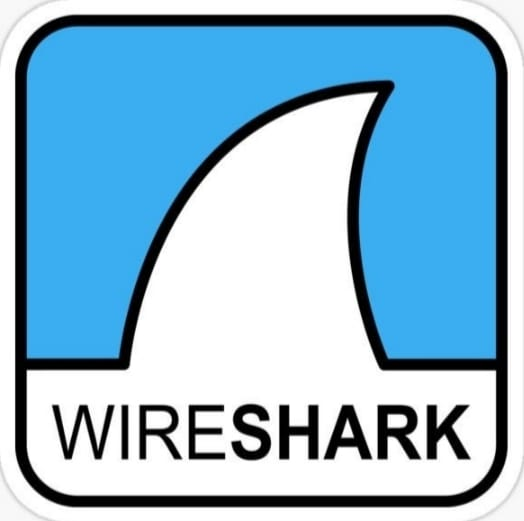
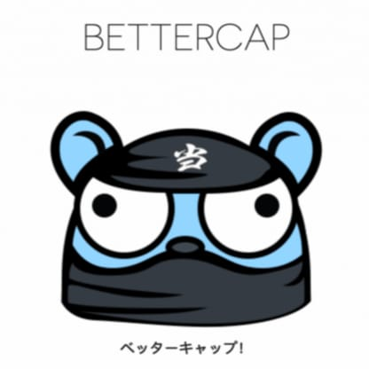
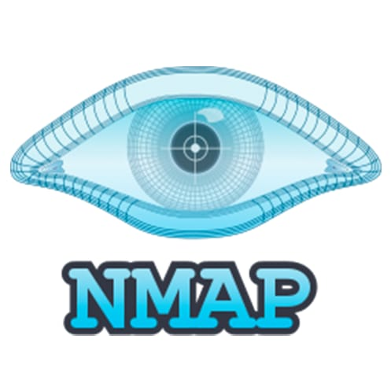

Learn ethical hacking tools in a simple way
👉 Penetration testing OS with preinstalled tools.

👉 Capture & analyze network traffic.

👉 MITM & network monitoring tool.
⚡ In-built in Kali Linux

👉 Network scanning & port discovery tool.
🔍 In-built in Kali Linux
👉 Web application security testing tool.
👉 OSINT tool for data relationship mapping.